Clos Networks
Clos Networks
Table of contents
- Blocking Network
- Non-Blocking Network
- Two Stage Non-Blocking Network
- Three Stage Non-Blocking Network
- Clos Network
- 5 Stage Clos Network
- FAT-Tree
In new era of internet, more applications are moving to cloud. Even for the standalone application, the central processing is done in cloud. Most of the cloud companies developed NextGen datacentre with CLOS architecture. This article is to demystify the Clos architecture.
The Clos grows in a very consistent way, thanks to having what’s called a scale-out architecture. You increase the amount of work supported by the network by adding more leaves and servers. In contrast, the traditional access-agg-core architecture, the scaling of the services are provided by beefing up the aggregation of box’s CPUs.
The clos network looks like this.
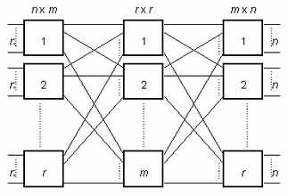 https://en.wikipedia.org/wiki/Multistage_interconnection_networks#Clos_network
Before going deep into this, we need to understand few terminologies on connections.
Blocking Network
Let’s say we have A and B as source connected via a single path to destinations C and D. If A is already using the path to talk to C and at the same time if B wants to talk to D, it cannot because there is no free path available from B to D. This is an example of Blocking Network.
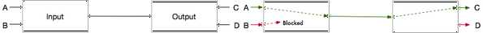Non-Blocking Network
Now if we add another path between Input and Output switches, then B can talk to D at the same time as there is another Path available to route it’s request. This is an example of a Non-Blocking Network.
 https://en.wikipedia.org/wiki/Multistage_interconnection_networks#Multistage_Interconnect_Network
https://en.wikipedia.org/wiki/Multistage_interconnection_networks#Multistage_Interconnect_Network
Two Stage Non-Blocking Network
In this two stage 2x2 switch connection, if A is already connected to E, then B is blocked to reach F.
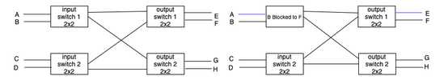Fig-1
If we add more paths like below, we’ll get non-blocking network. But, the Crosspoint complexity will be worser than crossbar crosspoint complexity.
Note: crossbar Crosspoint complexity is n^2, where for two stage non-blocking network Crosspoint complexity is is (r x n x m) (n is the number of inputs, m is the number of outputs and r is the number of input switches).
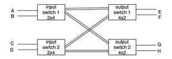Fig-2
Three Stage Non-Blocking Network
Now, with the introduction of middle staging of two 2x2 switches in Fig-1, B will be able to connect to F.
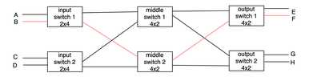Fig-3
This is the idea of Charles Clos.
What Clos showed that with a 3 stage network, one can build a strictly Non-Blocking network with Crosspoint complexity of 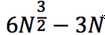 which is better than O(N^2).
Clos Network
A Clos network uses 3 stages to switch from N inputs to N outputs. In the first stage, there are r= N/n crossbar switches and each switch is of size n*m. In the second stage there are m switches of size r*r and finally the last stage is mirror of first stage with r switches of size m*n.
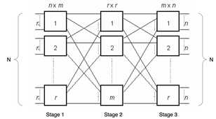Fig-4
With the above structure in mind, Clos showed that one can build a strictly Non-Blocking network if we satisfy the inequality
m >= 2n-1.
The number of connections is much less than that of a crossbar network.
5 Stage Clos Network
Let’s construct a 5 stage clos network. The fig-3, which is 3 stage clos network, is enhanced by adding new 2 switches each for stage 1 and stage 3 layers. The network will be like below(Fig-5).
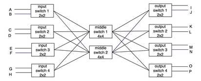Fig-5
The middle switch in Fig-5 can be decomposed like Fig-6 with 3 stage clos with 2x2 switches.
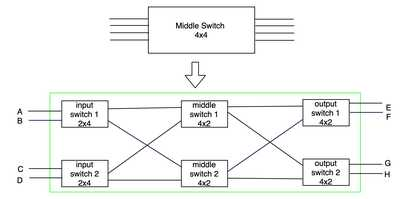Fig-6
So, after replacing two middle switches in Fig-5 with Fig-6 network, it will be a 5 stage clos network with 2x2 switch like below (Fig-7).
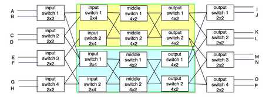Fig-7
FAT-Tree
Fat-Trees were originally introduced by Charles Leiserson in 1985. The basic idea is to keep larger bandwidth (with additional links) towards the root. A Fat-Tree is generally represented by FT(k,n) where k is the radix of the switch and “n” is the levels of the Fat-Tree.
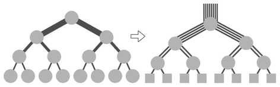[Ref: https://en.wikipedia.org/wiki/Fat_tree]
Now, lets construct the fat-tree from clos network (fig-5). This topology is known by various terms like Folded Clos, Spine and Leaf or 3 stage clos network.
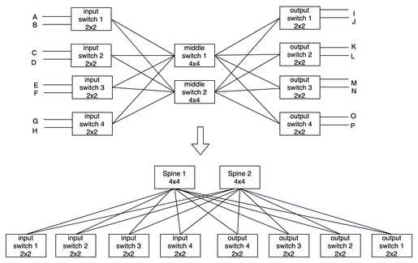Now lets make the 5 stage clos network like Fat-tree from Fig-7.
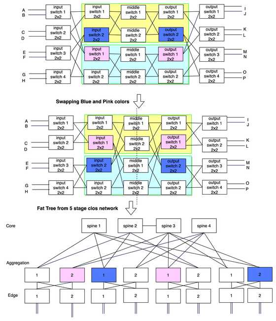Formally, we can say it’s FT(4,3) as the radix of the switches are 4 and it has 3 levels.
Calculation:
Assuming a switch has “k” ports and the number of Levels is “L”, then the first column in the below table gives you the generalize way to calculate various parameters. Next three columns, shows various numbers for 2,3 and 4 levels.
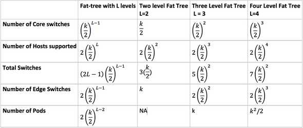In the next articles, will try to deconstruct the linkedin and facebook datacenter architecture.
Reference:
LEAVE A REPLY